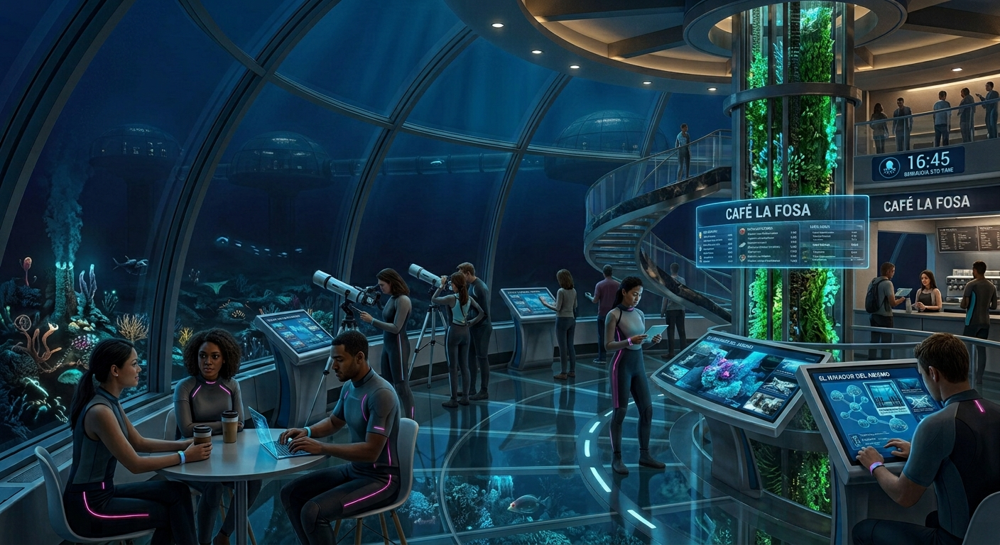
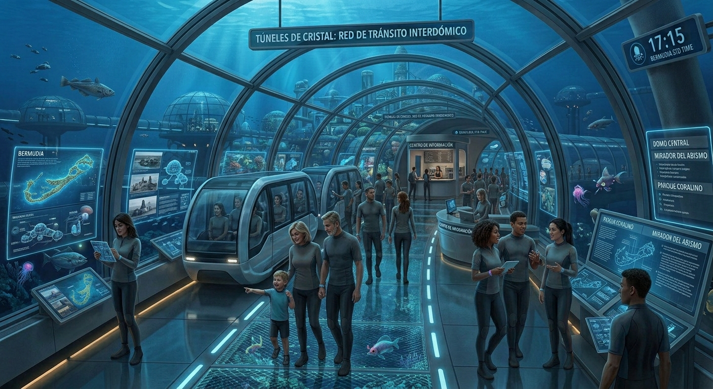
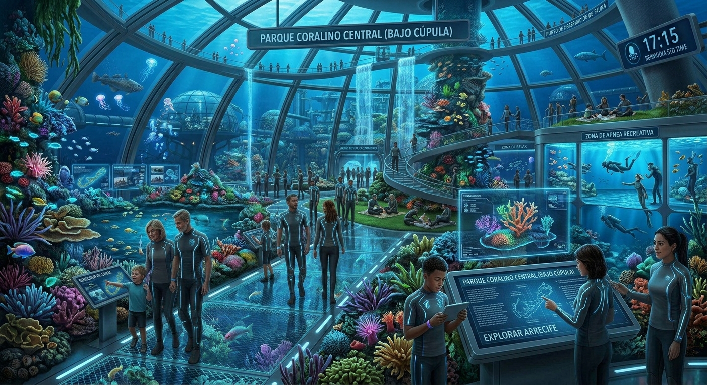

¡VISITANOS!
En Bermudia, hay varios lugares de interés que los visitantes pueden explorar.Desde nuestro mirador al abismo hasta los arrecifes de coral más impresionantes.
Mirador al Abismo

Ubicado en el punto geográfico más profundo y despejado del domo central de Bermudia, El Mirador del Abismo es el punto de observación más emblemático de la ciudad. Se trata de un nivel voladizo con suelo, paredes y techo de cristal templado de alta resistencia, proyectado hacia el exterior de las cúpulas habitacionales. Desde este punto, los ciudadanos y visitantes pueden contemplar la inmensidad del océano abierto, la red de túneles interconectados que forman la ciudad y el suelo marino donde la flora bioluminiscente crea un paisaje nocturno natural.
- FICHA TÉCNICA
- Ubicación: Cúpula Central, Nivel Inferior -3
- Profundidad: 420 metros bajo el nivel del mar
- Acceso: Ascensores panorámicos desde el Centro Urbano y pasarela peatonal desde el área comercial.
- Horario: Abierto las 24 horas (con iluminación atenuada durante el ciclo nocturno para observación de fauna).
- RECOMENDACIONES
Túneles de tránsito

La Red Interdómica de Túneles de Cristal es la columna vertebral del transporte y la movilidad en Bermudia. Consiste en una extensa red de tubos cilíndricos transparentes de metacrilato de alta densidad y refuerzos de titanio que conectan todas las cúpulas habitacionales, comerciales e industriales de la ciudad. Diseñados no solo para la funcionalidad sino también como una atracción panorámica, estos túneles ofrecen a los ciudadanos y visitantes la experiencia única de trasladarse sumergidos en pleno océano, rodeados de vida marina, arrecifes de coral y la infraestructura luminosa de la ciudad.
- FICHA TÉCNICA
- Extensión total: 85 kilómetros de red interconectada.
- Profundidad promedio: De 150 a 350 metros bajo el nivel del mar.
- Cristal de metacrilato ultra-resistente autoreparable y estructuras modulares de titanio.
- Sistemas de Transporte: Monorriel de levitación magnética (Hydro-Loop) y vías peatonales climatizadas.
- Operatividad: 24/7 con sistemas automáticos de presurización y seguridad.
- RECOMENDACIONES
El Parque Coralino Central (Bajo Cúpula)

El Parque Coralino Central es el pulmón verde y acuático más grande de Bermudia. Ubicado en el interior del Domo Biológico Nº 3, este espacio recreativo combina jardines botánicos terrestres con biosferas de agua salada y arrecifes de coral vivos. racias a un avanzado sistema de luz solar sintetizada y filtrado continuo de agua de mar, el parque recrea un ecosistema tropical bajo techo donde conviven especies vegetales marinas y terrestres. Es el lugar de encuentro preferido por los ciudadanos para hacer deporte, relajarse o disfrutar de un día en familia sin salir de la seguridad de la cúpula.
- FICHA TÉCNICA
- Ubicación: Domo Biológico Nº 3 (Sector Norte).
- Superficie: 12 hectáreas bajo cubierta acristalada.
- Profundidad del Domo: 280 metros bajo el nivel del mar.
- Clima interior: Recreación de clima tropical suave (24°C constantes).
- Acceso: Conexión directa desde la línea peatonal de los Túneles de Cristal y la Estación Central.
- RECOMENDACIONES